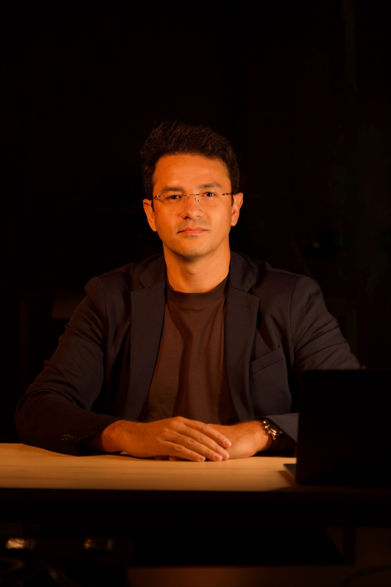

Sua aprovação
exige domínio.
Abandone o estudo amador. Nós aplicamos engenharia reversa nas maiores bancas do país para entregar exatamente o que decide a sua posse.
Quem Somos
O Instituto Sapiens de Ensino (ISE), fundado em 2026, é mais do que um curso de aulas online (EAD) voltado à preparação de seus alunos aos concursos públicos mais disputados do país. Composto por professores com ampla experiência nesse ramo de atuação, o ISE é um projeto moderno e sofisticado que nasce com uma nova proposta e uma filosofia clara: a excelência no ensino como caminho mais seguro à aprovação.
Aqui, não poupamos fôlego para sonhar junto com nossos alunos — porque conhecemos de perto a realidade das carreiras que eles almejam e nos comprometemos integralmente com cada etapa dessa jornada.
Muito além de aulas online e híbridas, o Instituto Sapiens de Ensino é composto pela mais moderna e tecnológica plataforma virtual de ensino, aliada a ferramentas de interatividade e metodologias didáticas inéditas no mercado.

Sede Tecnológica
Goiânia / GO
Engenharia Reversa
Você não estuda para aprender tudo. Você estuda hoje exatamente o padrão comportamental da banca que vai avaliar a sua prova amanhã.
Doutrina Vertical
Resumos de 2000 páginas não aprovam. Sintetizamos a doutrina focando na alta incidência de dados do edital.
Código Preditivo
Teóricos falham. Nossas aulas são estruturadas por algoritmos humanos que vivem o direito: Procuradores e Juízes ativos.
Simulação Hacker
Treinamento exaustivo com questões inéditas, hackeando o perfil neuro-linguístico exato das bancas (CESPE/FGV).
Carreiras Jurídicas


A Elite Ensina
Teóricos apenas escrevem. Nossas autoridades aprovam alunos e assinam o seu termo de posse.

Carlos Vinícius
Promotor - MP/GO

Carlos André
Fundador Inst. Carlos André
Reinaldo Alves
Desembargador - TJ/GO

Wilson da Silva
Desembargador - TJ/GO
Guilherme Carreira
Juiz de Direito - TJ/GO

Danyllo Luiz
Assessor Jurídico - TJ/GO
.jpeg)
Thiago Henrique
Juiz de Direito - TJ/SP

Giovanni Machado
Vice-Pres. TED/OAB-GO
Amanda Neves
Assessora - TJ/GO

Aldo Guilherme
Juiz de Direito - TJ/GO

Vinicius Borges
Juiz de Direito - TJ/GO
Wild Afonso
Desembargador - TJ/GO
Atendimento
Estratégico
Conecte-se com um especialista. Receba orientação de carreira, descontos de lote e conteúdos analíticos focados na sua banca.